Lubrication
9
Learning Outcome
When you complete this learning material, you will be able to:
Explain the components of a lubrication application and maintenance program.
Learning Objectives
You will specifically be able to complete the following tasks:
- 1. Describe the methods of manufacture and the different classifications of lubricants.
- 2. Describe the significance and measurement of lubricating oil characteristics, including viscosity, relative density, API gravity, pour point, and dielectric strength.
- 3. Explain the typical causes of lubricating oil deterioration.
- 4. Describe the types of lubrication additives.
- 5. Describe a typical power plant lubrication program, including a lubrication survey.
- 6. Explain the different types of lubricating/governing/seal oil systems.
- 7. Describe the components and operation of a typical lubricating oil purification system.
- 8. Describe the various applications of ball-and-roller bearings and their lubrication, including bearing seals.
Objective 1
Describe the methods of manufacture and the different classifications of lubricants.
METHODS OF MANUFACTURE
Lubricants are manufactured to meet the requirements of the service for which they are intended. The particular properties desired depend upon the nature of the surfaces which are to be lubricated, the load carried, the speed of rubbing and the operating temperature.
The following are methods of manufacturing lubricants:
- • Fractionating
- • Cracking
- • Refining
Fractionating
Fig. 1 shows a diagrammatic cross-section of a fractionating tower. Crude oil is preheated and continuously pumped into the tower at the approximate level shown. Heat within the tower is applied with steam jets streaming directly into the charge of crude oil. The crude oil boils and the vapours produced rise into the tower. These vapors must pass through the bubble caps in each tray in their progress up the tower and as their temperature falls, condensation of the various constituents takes place.
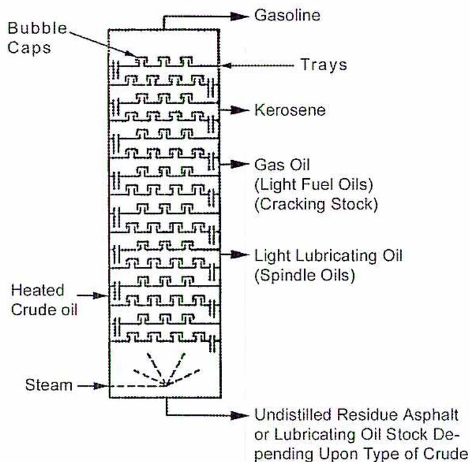
The diagram illustrates a vertical fractionating tower used for distilling crude oil. The tower contains several horizontal trays, each equipped with bubble caps. Heated crude oil enters the lower section of the tower, and steam is introduced at the very bottom. As the mixture rises, it separates into different fractions based on their boiling points, which are drawn off from various levels of the tower. The products, from top to bottom, are: Gasoline, Kerosene, Gas Oil (also labeled as Light Fuel Oils and Cracking Stock), and Light Lubricating Oil (also labeled as Spindle Oils). The material that does not vaporize and remains at the bottom is the Undistilled Residue, which can be Asphalt or Lubricating Oil Stock, depending on the type of crude oil used. Labels with arrows point to the Bubble Caps, Trays, and the various input and output streams.
Figure 1
Fractionating Tower
Fig. 2 shows the liquid levels on the trays and the upward path of the vapours through the bubble caps. The temperatures at the top and bottom of the tower are carefully controlled and this in turn keeps the various level temperatures constant so that continuous streams of liquid can be taken from various levels in the tower as the vapors continue to condense. Oils produced in this manner are called "straight-run."
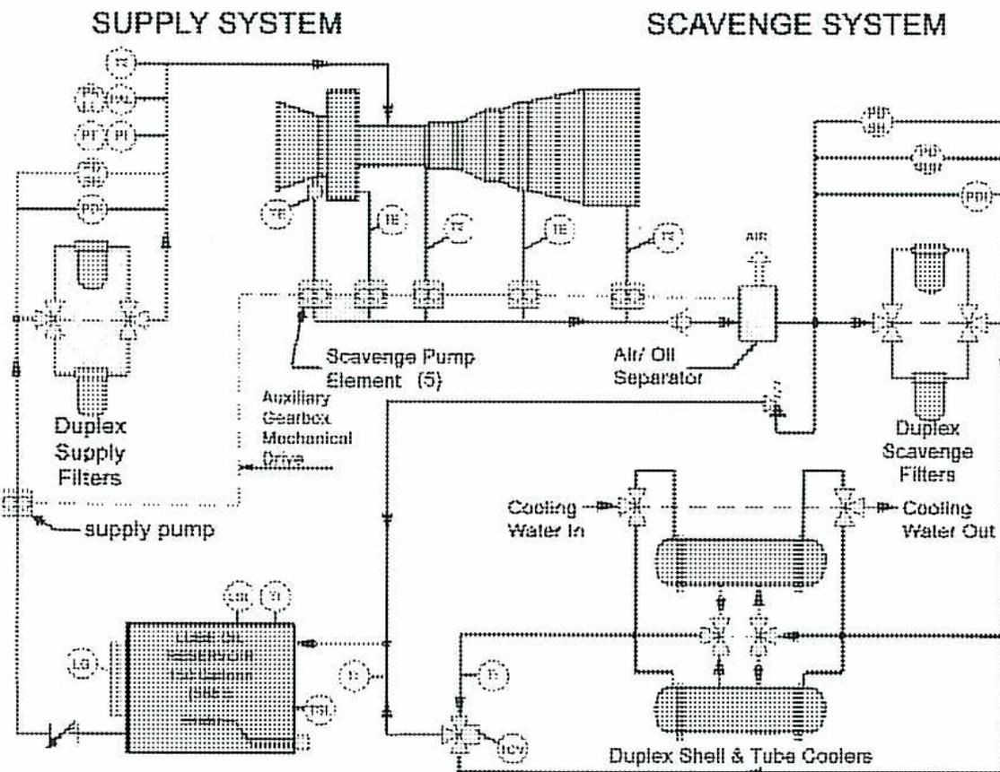
Figure 2
Trays and Bubble Caps inside Fractionating Towers.
Cracking
All refined petroleum products such as gasoline, kerosene, gas oil and lubricating oil are composed of two elements, carbon and hydrogen. The other constituents present in minor quantities, such as sulphur, are considered to be impurities. Further, the majority of these petroleum products are composed of approximately 85% carbon and 15% hydrogen by weight.
The arrangement and number of the individual carbon and hydrogen atoms that make up the particular molecules in the product govern the difference between products. The chemical combinations of atoms (molecules) can be changed to form new molecules. The possible number of carbon compounds which can be produced is so great that it occupies a special classification in the field of chemistry called organic chemistry.
One method of changing molecules is called “thermal cracking.” Here, the application of heat and pressure combine to produce violent agitation of the atoms forming the molecules until they force a division into smaller molecules and transform, for example, heavy fuel oil into gasoline.
The cracking process, in some cases, proceeds faster and more readily in the presence of a catalyst. Catalyst cracking is employed extensively to produce gasoline with superior anti-knock and stability qualities.
Refining
Lubricating oils obtained from crude petroleum by distillation (fractionating) contain impurities such as sulphur and other compounds. Washing with a solvent (solvent refining) removes these unwanted materials.
Wax, contained in lubricating oils, has a direct influence on the temperature at which the oil ceases to pour. If a wax-bearing oil is used at low temperatures, the wax content is reduced to lower the pour point. This is done by chilling the oil to a temperature lower than the desired pour point. Cloth filters remove the solidified wax formed at this temperature. Wax is not affected by distillation and, during this process, passes over with the various fractions of the oil. Wax has a flash point and fire point equal to the heaviest oils and appears to have little effect when oils are used at high temperatures.
CLASSIFICATIONS OF LUBRICANTS
The majority of lubricants are composed of:
- • Mineral oils
- • Refined oils
- • Synthetic oils
- • Fatty oils
- • Solids
- • Greases
MINERAL OILS
Mineral oils are manufactured from crude petroleum oil. The process of commercially boiling and then condensing the vapours sorts the crude oil into various products called “cuts” or “fractions. This distillation process is called “fractionating” and is carried out in a fractionating tower.
Unlike water, which boils uniformly at 100°C (at sea level), crude oil contains a variety of components that each have a different boiling point. This property is made use of in the fractionating process.
REFINED OILS
Paraffinic and naphthenic oils are refined from crude oil. Literature on lubrication frequently makes references to long chain molecules and ring structures in connection with paraffinic and naphthenic oils, respectively. These terms refer to the arrangement of hydrogen and carbon atoms that make up the molecular structure of the oils.
Paraffinic Oils
Paraffinic oils are distinguished by a molecular structure composed of long chains of hydrocarbons. The hydrogen and carbon atoms are linked in a long linear series similar to a chain. Paraffinic oils contain paraffin wax and are the most widely used base stock for lubricating oils. Paraffinic oils have:
- • Excellent stability (higher resistance to oxidation)
- • Higher pour point
- • Higher viscosity index
- • Low volatility and, consequently, high flash points
- • Low specific gravities
Naphthenic Oils
In contrast to paraffinic oils, naphthenic oils are distinguished by a molecular structure composed of “rings” of hydrocarbons. The hydrogen and carbon atoms are linked in a circular pattern. These oils do not contain wax and behave differently from paraffinic oils. Naphthenic oils have:
- • Good stability
- • Lower pour point due to absence of wax
- • Lower viscosity indexes
- • Higher volatility (lower flash point)
- • Higher specific gravities
Naphthenic oils are reserved for applications with narrow temperature ranges and where a low pour point is required.
SYNTHETIC OILS
Synthetic lubricants are produced through chemical synthesis rather than from the refinement of existing petroleum or vegetable oils. These oils are generally superior to petroleum (mineral) lubricant. Synthetic oils perform better than mineral oils in the following respects:
- • Better oxidation stability or resistance
- • Better viscosity index
- • Much lower pour point, as low as \( -46^{\circ}\text{C} \)
- • Lower coefficient of friction
The advantages that synthetic oils offer are most notable at either very low or very high temperatures. Good oxidation stability and a lower coefficient of friction permit operation at higher temperatures. The better viscosity index and lower pour points permit operation at lower temperatures.
The major disadvantage to synthetic oils is the initial cost which is approximately three times higher than mineral-based oils. However, the initial premium is usually recovered over the life of the product which is about three times longer than conventional lubricants. The higher cost makes it inadvisable to use synthetics in oil systems experiencing leakage and high oil consumptions.
Factors to be considered when selecting synthetic oils include:
- • Pour and flash points
- • Demulsibility
- • Lubricity
- • Rust and corrosion protection
- • Thermal and oxidation stability
- • Antiwear properties
- • Compatibility with seals, paints, and other oils
Synthetic oils are as different from each other as they are from mineral oils. Their performance and applicability to any specific situation depends on the quality of the synthetic base oil and additive package.
Several major categories of synthetic lubricants are available including:
- • Synthesized hydrocarbons
- • Organic esters
- • Polyglycols
- • Silicones
Synthesized Hydrocarbons
Polyalphaolefins and dialkylated benzenes are the most common. These lubricants provide performance characteristics closest to mineral oils and are compatible with them. Applications include engine and turbine oils, hydraulic fluids, gear and bearing oils, and compressor oils.
Organic Esters
Diabasic acid and polyol esters are the most common. The properties of these oils are easily enhanced through additives. Applications include crankcase oils and compressor lubricants.
Polyglycols
Polyglycols properties are based on their molecular weight and monomers used, and offer a wide range of formulating possibilities. When used as functional fluids, they offer superior lubricity and solvency. Applications include gears, bearings, and compressors for hydrocarbon gases.
Silicones
These oils are chemically inert, non-toxic, fire-resistant, and water repellent. They also have low pour points and volatility, good low temperature fluidity, and good oxidation and thermal stability at high temperatures.
FATTY OILS
Fatty oils are obtained from the seeds of vegetables. They are sometimes used alone but more frequently are compounded with mineral oils. They are known also as “fixed oils” because they cannot be distilled without decomposition.
The addition of a fatty oil to a mineral oil increases the adsorbed film on the surface to be lubricated which raises the load-carrying ability of oil films.
In the presence of heat, mineral oils act differently from fatty oils. A simple experiment shows that fatty oils move towards the hottest part of a flat iron plate, while mineral oils tend to “shy” away from heat. This feature is due to a more rapid lowering of surface tension within the fatty oil which improves the penetrating and spreading property.
Mineral oils on a metal surface heated to about 230°C tend to form small spheres, like water on a hot frying pan, when the holding force within the molecules becomes greater than the affinity of the surface molecules for the metal. The ability to wet a metal surface in an unbroken film is a necessary function of lubrication.
Mineral oils may be compounded with various materials in many ways. The basic principle of compounding is to add oily materials that improve the load-carrying ability of the finished oil under certain conditions, or impart particular qualities which straight mineral oils do not possess.
The following are the origins and properties of two common fatty oils:
- • Canola oil
- • Castor oil
Rapeseed Oil
This oil is obtained from plant seeds and has a pale, clear yellow color. Before this oil is compounded with mineral oil, it is subjected to blowing with air which oxidizes, stabilizes, and reduces the drying tendencies of the oil.
Rapeseed is used for compounding with mineral oil where there is a possibility of water entering the bearings. It emulsifies with the water and prevents the displacement of the oil film from the bearing metal.
Castor Oil
Castor oil comes from the beans of the castor shrub and has the highest specific gravity and viscosity of any fatty oil. It does not readily mix with mineral oils unless some other fatty oil such as lard or rape is present. It is occasionally compounded with heavy mineral oil and used for lubricating heavy-duty gearing.
As a lubricant for internal combustion engines, it has a viscosity rating of an SAE 50 (Society of Automotive Engineers) motor oil and a high viscosity index rating. Castor oil is used in engines with extremely high bearing pressures such as racing car engines.
It produces tough stringy deposits after a short period of use and is cleaned out frequently.
Adhesive Compounds
When hand-oiling methods are used to lubricate machine bearings, materials that reduce dripping are added to the oils. Latex and several synthetic products are added to oil to impart this clinging property to oils and greases.
Extreme Pressure Agents
Chlorinated compounds are frequently added to mineral oils. Under these circumstances, a thin film of metal chloride is produced when the oil film breaks, and this action prevents scoring or welding.
The amount of extreme pressure agents required to produce this effect is comparatively small and gear oils generally contain no more than 1 percent while metal-cutting oils may contain about 0.5 per cent. The oil may contain both sulphur and chlorine as prepared compounds.
SOLID LUBRICANTS
Solid lubricants are useful in reducing friction where oil films cannot be maintained because of pressures or temperatures. Because solid lubricants are dry they are useful for some applications where oils tend to gather dirt and become gummy.
Solid lubricants may be divided into two general classifications. The first group is mechanical and has no particular affinity for a metal surface. The second classification has a chemical affinity for most metals although no chemical reaction. All solid lubricants range from mild polishing agents to mild lapping agents. Neither class provides adequate protection from rusting, which indicates that the solid film is not impervious to moisture.
All solid lubricants interpose a layer of material between the moving surfaces. Solid lubricants should be softer than the materials being lubricated. As an example, emery and ferric oxide will reduce friction but rapidly score and abrade the metal surfaces. Solid lubricants are fixed and therefore cannot transmit heat or contaminants from the bearing as circulating oil can.
Graphite
Graphite is manufactured from coke or anthracite coal. A great deal of graphite for non-lubricating purposes is mined, but mined graphite contains many impurities which are difficult, if not impossible, to remove completely.
Graphite is normally obtained in flake form. The particles are milled to a very small size, called colloidal graphite. Colloidal graphite is used in the dry form and mixed with various oils, greases and solvents which act as vehicles to carry the graphite to the moving surfaces.
Talc
Talc is powdered soapstone. Air flotation refines it and permits the larger particles and impurities to sink out of the air stream. Like most natural products it contains a small percentage of impurities. A common use is as a mild lapping compound for breaking in machine parts.
Mica
Mica is a mineral found in nature. The mining and refining processes are much the same as for talc. Sheet mica is widely used as a dielectric in electrical equipment. In the finely powdered state it is used for running-in bearings, where it laps out the high spots to increase the bearing area.
Zinc Oxide
This material is a white metallic oxide of zinc. The very small particle size makes it of some interest as a solid lubricant. Because of its (light) colour, it has applications where darker lubricants are not suitable as in textile, food, and chemical processes.
Molybdenum Disulfide
Molybdenum disulfide is a solid chemical lubricant. The molecular structure of an atom of molybdenum coupled to two atoms of sulphur provides a strong bond to metals that are active with sulphur. Some of these are iron, silver, and copper. Some researchers believe that the sulphur-to-sulphur bond that shears easily causes the low coefficient of friction between molecules. Others believe that the low shear is the result of adsorbed moisture or other films on the surface of the fine particles of molybdenum sulfide.
To obtain the maximum performance, the metal surfaces are cleaned well before applying a chemically active solid lubricant. It may be used with a solvent to carry the solid lubricant to the moving surfaces. Some applications are in instrument lubrication where lubricants tend to gather dirt and in springs and electrical switch gear. Equipment that is heavily loaded and used intermittently uses solid lubricants.
Extreme Pressure Lubricants
Full extreme pressure lubricants are sometimes called "hypoid" lubricants. They contain compounds of sulphur, chlorine or phosphorus. Under high load conditions the high points of the bearing surfaces break through the polar films of the lubricant and temperatures are produced which can cause galling. At these temperatures the chemicals in the full extreme pressure lubricants become active and form coatings of sulphides, chlorides, or phosphides. These coatings act as a dirt film and prevent any solder from sticking. At normal operating temperatures, these chemical compounds are inactive and have little, if any, action on the metal surfaces.
Oleic Acid
This is an organic acid found in almost all fatty oils. It is used as a mild “extreme pressure agent” by adding up to 1 percent to a mineral oil. Extreme pressure agents are used in applications where the conventional lubricants fail to protect the metal surfaces, for example under the high shear conditions existing in the sliding action of hypoid gear teeth. These substances are polar. They do not change the surface of the metal chemically but orient themselves to the metal surface and are extremely difficult to remove.
GREASES
Grease is a semi-solid lubricant produced by the addition of a thickening agent to a lubricating oil. Greases are divided into four types:
- • Water resistant
- • Water soluble
- • Multi-purpose
- • Synthetic
Water Resistant Greases
These greases use a calcium or aluminum base and are for low temperature use. Cooking tallow or fatty acids with lime and water to form the base or soap makes a calcium (or lime base) grease. (Rewrote. The soap is then emulsified in oil until a grease of the required consistency is produced. The proportions of oil and soap in the grease vary from approximately 95% oil and 5% soap to 75% oil and 25% soap.
Lime-soap greases are not used where the temperature is likely to rise above 70°C because the essential water content then evaporates and separation of the soap and oil follows with consequent breakdown of the grease. Similarly, this grease separates into oil and soap under heavy pressure so that it is not suitable for high-temperature, heavy-load or high-speed bearings. Its advantages are its insolubility in water and its soft texture.
Aluminum-soap grease is similar in texture and lubricating qualities to calcium soap grease, but it is more stable and resists separation. It is limited to use below its melting point of 93°C because its physical characteristics change drastically above this temperature and the grease becomes like rubber.
Water Soluble Greases
Sodium-soap (soda-base) greases are made by a process similar to that of the lime-base greases, however they differ in their characteristics. They have a sponge or fibre-like texture and possess a high degree of cohesion which makes them suitable for ball-and-roller bearings. Soda-base greases have a high melting point, about 150° - 175°C so they can be used in high temperature locations.
These greases readily form emulsions with water and therefore are not used in situations where they are in contact with water or steam.
Multi-Purpose Greases
Lithium and barium soaps, when used as bases, produce greases which have a wide range of operating temperature limits.
Barium-base grease has a high resistance to water and works well at temperatures up to 200°C. Lithium-base greases have good metal wetting properties and are water resistant. They can be used with low pour-point oils to produce low temperature greases which can be used down to -50°C.
Synthetic Greases
These are composed of synthetic fluid lubricants and the same soaps and thickeners that are used with the conventional mineral greases. They are generally suited to use at temperature extremes and can be produced in either water soluble or water resistant types. The synthetic fluids most used are polyalkylene glycols and silicones.
Some silicone grease is manufactured and used (entirely synthetic). This does not melt, is highly resistant to water and oxidation, and suited to use in the presence of chemical fumes or other corrosive influences.
Qualities of Lubricants
Lubricants provide the following services with emphasis placed upon one or more of these according to the needs of the particular application:
- • Minimum coefficient of friction
- • Maximum adhesion to the surfaces to be lubricated
- • Physical stability under variations of temperature and pressure
- • Resistance to oxidation and emulsion
- • Fluidity at low temperatures
Objective 2
Describe the significance and measurement of lubricating oil characteristics including viscosity, relative density, API (American Petroleum Institute) gravity, pour point, and dielectric strength.
LUBRICATING OIL CHARACTERISTICS
The following are characteristics of lubricating oils:
- • Viscosity
- • Viscosity index
- • Flash and fire points
- • Specific gravity (relative density)
- • Pour point
- • Cloud point
- • Neutralization (acid) number
- • Dielectric strength
Viscosity
The viscosity of an oil is a measure of the oil's resistance to shear. Viscosity is commonly known as resistance to flow. If a lubricating oil is considered as a series of fluid layers superimposed on each other, the viscosity of the oil is a measure of the resistance to flow between the individual layers. A high viscosity implies a high resistance to flow while a low viscosity indicates a low resistance to flow. Viscosity varies inversely with temperature. Pressure also affects viscosity. Higher pressure causes the viscosity to increase, and subsequently the load-carrying capacity of the oil also increases. This property enables the use of thin oils to lubricate heavy machinery. The load-carrying capacity also increases as the operating speed of the lubricated machinery is increased.
The Saybolt Universal Viscometer is used to determine viscosity. It is a simple apparatus and gives reliable results for comparative purposes. The principal sections of the apparatus are outlined in Fig. 3.
The top receptacle is filled with the oil to be tested until it overflows the rim. This is slightly over 60 cc. The apparatus is in a heat bath held at either 37.8 or 99°C, for whichever temperature it is desired to obtain the viscosity. Light oils are run at 37.8°C, and heavy oils at 99°C.
When the oil has reached the temperature of the bath, the plug is pulled out and the time in seconds for 60 cc to run into the flask (Fig. 4) is recorded as the viscosity. For example, if the temperature of the oil was 37.8°C and the time taken to fill the flask was 500 seconds, the oil has a viscosity of 500 at 37.8°C. This measurement is written as follows:
Viscosity 500 at 37.8°C (S.S.U.) (Saybolt Seconds Universal)
The S.S.U. indicates that the viscosity was run with a Saybolt universal tube for securing the viscosimeter.
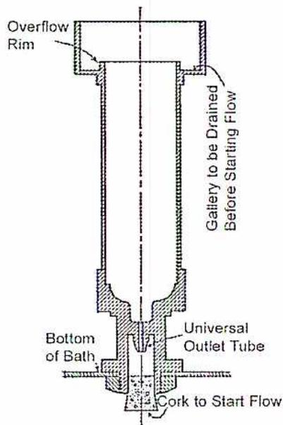
A cross-sectional diagram of a Saybolt Tube viscosimeter. The diagram shows a vertical tube assembly. At the top, there is an 'Overflow Rim'. The main body of the tube is labeled 'Gallery to be Drained Before Starting Flow'. At the bottom of the tube, there is a 'Universal Outlet Tube' which extends into a 'Bottom of Bath'. A 'Cork to Start Flow' is shown at the very bottom of the outlet tube.
Figure 3
Saybolt Tube
Viscosity readings are taken at 37.8°C for time limits between 40 and 1000 seconds. Readings below 40 seconds are not sufficiently accurate with this method, and very few types of lubricating oils have a viscosity of 40 seconds at 37.8°C. This reading is approximately the viscosity of light fuel oil.
Readings for more viscous oils are taken at 99°C on the S.S.U. For example, if the time taken to fill the lower receptacle with 60 cc was 150 seconds at a temperature of 99°C, it is written:
Viscosity 150 at 99°C (S.S.U.)
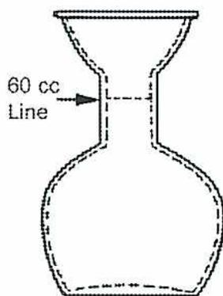
Figure 4
Saybolt Flask
Viscosity readings may be taken at any temperature. However, a complete test for the majority of lubricating oils supplies two readings, one at \( 37.8^{\circ}\text{C} \) and the other at \( 99^{\circ}\text{C} \) . With two readings, a line on a viscosity-temperature chart joins and extends the two points and intermediate viscosities are read off for any desired temperature between. This method of determining viscosity is relatively accurate for most readings between \( -1 \) and \( 150^{\circ}\text{C} \) .
Viscosity Index
The viscosity index of a lubricating oil indicates its change in viscosity with temperature. All oils flow more readily with increasing temperature, but the amount of viscosity change varies with different types of oil.
Oils that change least in viscosity during temperature changes have a high viscosity index. The maximum figure of 100 is given to a paraffin base oil with viscosity 50 S.S.U. at \( 99^{\circ}\text{C} \) and 260 S.S.U. at \( 37.8^{\circ}\text{C} \) .
The minimum figure of zero is given to a napthalene based oil with a viscosity of 50 S.S.U. at \( 99^{\circ}\text{C} \) and 430 S.S.U. at \( 37.8^{\circ}\text{C} \) .
Test figures taken on other oils are checked against these and given a viscosity index rating by comparison.
In some applications where the operating temperature varies over a wide range, it is advantageous to add a viscosity index improver to the oil. These are long chain, high molecular mass polymers derived from petroleum. At low temperatures the viscosity is that of the oil itself. As the temperature rises, an increasing number of the polymers come out of solution and prevent the oil from becoming too thin.
Flash and Fire Points
The flash point of an oil is the temperature to which it must be heated to give off sufficient vapor to form an inflammable mixture with air. In this test, the vapours flash upon the application of a lighted burner and then go out for want of more vapour. The flash point of lubricating oils varies in the range 200° to 260°C.
The fire point is the temperature to which an oil must be heated to burn continuously when the test burner is applied to the vapour. This is usually about 10 to 25°C above the flash points.
Specific Gravity (or Relative Density)
The specific gravity of a mineral oil is a numerical value, an index of the mass of the oil compared with the mass of an equal volume of water. The specific gravity of water is taken as unity (1.0). Liquids with a reading below 1 are less dense than water, liquids with a reading above 1 are more dense than water.
The specific gravity of oils is important in the control of refinery operations or where large volumes of oil are being handled. It is also helpful in identifying oils because the specific gravity of an oil varies with the type of crude oil from which it was manufactured.
Gravity A.P.I.
Specific gravity readings are given to several places of decimals, e.g. 0.9765. The American Petroleum Institute (A.P.I.) devised a scale which is a mathematical function of the specific gravity. The advantage is that it is easier to visualize the relationships between whole numbers than between the decimal points on the original scale.
The relationship between the two scales is derived as follows:
$$ \text{Gravity A.P.I.} = \frac{141.5}{\text{Specific Gravity at } 15.6^\circ} - 131.5 $$
Pour Point
The pour point of an oil is the lowest temperature at which an oil will flow. The test is important for lubricating oils that are used in cold surroundings, particularly where they must flow to the suction side of an oil pump. A commonly used rule of thumb when selecting oils is to ensure that the pour point is at least 10°C lower than the lowest anticipated ambient temperature.
The test procedure is simple. The sample is cooled in a test tube until the oil ceases to pour and then 3°C is added to the temperature. For example if a particular oil ceases to pour at -12°C the pour point is stated as -9°C. When selecting an oil for use under low temperature conditions, the viscosity and the pour point are taken into consideration.
Cloud Point
The cloud point is the temperature at which dissolved solids in the oil, such as paraffin wax, begin to form and separate from the oil. As the temperature drops, wax crystallizes and become visible. Certain oils are maintained at temperatures above the cloud point to prevent clogging of filters.
Neutralization (Acid) Number
The neutralization or acid number is a measure of the amount of potassium hydroxide required to neutralize the acid in a lubricant. Acids are formed as oils oxidize with age and service. The acid number for an oil sample is indicative of the age of the oil and can be used to determine when the oil is changed.
Dielectric Strength
Highly refined mineral oils possess excellent electrical insulating properties. They are used as cooling media in transformers, oil circuit breakers, and similar apparatus.
Passing an electrical current through the oil until the voltage is sufficient to cross a gap between two submerged electrodes which are placed about 2.5 mm apart measures the resistance to break down from electrical discharge. These electrodes are circular and have a diameter of 25 mm.
The apparatus and temperature conditions are standardized, and the breakdown point of the oil is recorded in volts. An average grade of transformer oil resists 30 kV under this test. When mineral oils are used in electrical equipment, they are refined to eliminate all impurities, and special precautions are taken to remove all trace of moisture. An almost infinitesimal trace of moisture lowers the dielectric strength. Fig. 5 shows the effect of moisture in transformer oil.
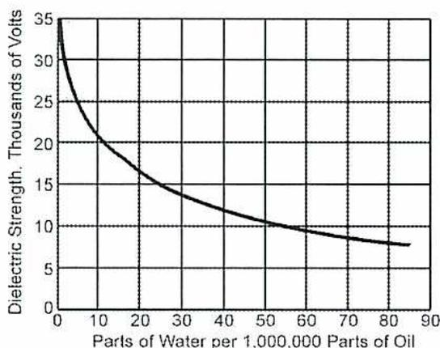
| Parts of Water per 1,000,000 Parts of Oil | Dielectric Strength, Thousands of Volts |
|---|---|
| 0 | 30 |
| 10 | 22 |
| 20 | 18 |
| 30 | 15 |
| 40 | 13 |
| 50 | 11 |
| 60 | 10 |
| 70 | 9 |
| 80 | 8 |
| 85 | 8 |
Figure 5
Effects of Moisture on Dielectric Strength of Oil
Objective 3
Explain the typical causes of lubricating oil deterioration.
LUBRICATING OIL DETERIORATION
The lubrication system on a modern steam turbine contains thousands of litres of high grade oil and in itself represents a considerable financial investment. It is essential that oils are maintained in top condition to protect this investment and of course, to ensure that the oils can perform their lubricating and cooling duties in the complex machinery of the turbine and its controls.
Both operators and designers demand the utmost in reliability, continuity of operation, and economy from steam turbines. In meeting these demands the turbine depends to a large extent upon the quality of the oil in its lubricating system. Unless this oil satisfactorily performs its functions, efficient turbine operation cannot be maintained. In addition to performing certain specific functions, the oil must also be suitable for long, continuous service. This period is measured in years or, in fact, the lifetime of the turbine, because complete replacement of the oil charge of a large turbine is an expensive and lengthy process.
The following are the main causes of deterioration in turbine lubricating oils:
- • Oxidation
- • Foaming
- • Emulsions
- • Sludge
Oxidation
When lubricating oils react with oxygen, materials form that impair the qualities of the oil. Eventually the impurities become insoluble in the oil, form sludge, especially with water and foreign suspended matter, and promote the formation of deposits. On continued oxidation, the oil develops organic acids and in severe cases the viscosity increases significantly.
The reaction between oil and oxygen is accelerated by:
- • Increasing the temperature
- • Metallic catalysts
- • Water
- • Foreign suspended matter
- • The oxidation products themselves
An increase of \( 10^{\circ}\text{C} \) in the temperature of the oil doubles the rate of oxidation. Thus an oil which gives satisfactory service life when the bearing outlet temperature is \( 65^{\circ}\text{C} \) might show quite unsatisfactory service life if the temperature rises to \( 80^{\circ}\text{C} \) . Therefore, operating temperatures are held within the limits the turbine manufacturer specifies, \( 55^{\circ} \) to \( 70^{\circ}\text{C} \) .
Metals that act as catalysts promote oxidation. Copper, brass, bronze and zinc are particularly effective catalysts and their use is avoided as much as possible. Galvanized (zinc coated) iron piping or tanks are not recommended. Tinning the surfaces that come in contact with the oil overcomes the adverse effects of copper.
Moisture may enter the lubricating system through leaks at the sealing glands of steam turbines or at the oil coolers and through condensation from the atmosphere in the storage tank. The lubricating oil is inspected periodically for the presence of water and, if detected, the source is determined and the problem eliminated as soon as possible.
Oxidation inhibitors that the refiner incorporate in turbine oils combat the adverse effects of oil oxidation. Even under severe operating conditions, very small amounts of oxygen inhibitors greatly prolong the useful life of the oil.
Foaming
The formation of foam on the surface of the oil in the storage tank indicates the presence of air in the oil. It is essential that most of the air entrained in the oil as it flows through the lubrication system is eliminated before the oil is recirculated. Entrapped air reduces the flow of oil to the bearings and causes erratic operation of the governors. Turbine oils are manufactured so they free themselves of air very rapidly. In general, low viscosity oils dissipate entrained air more rapidly than higher viscosity oils.
The following mechanical and operational conditions promote air entrainment:
- • Air leakage into the pump suction line
- • Low oil level, permitting the pump suction inlet to become exposed to air
- • Insufficient venting of the lubricating system
- • Excessive splashing from oil return lines to the storage tank
- • Oil return lines of insufficient size or capacity
- • Discharge velocity from the pressure regulating valve too high causing unnecessary splashing and spray above the oil level
- • Operating the circulating oil pump at excessive capacity
- • Wide difference in temperature between fresh oil added and the oil in the system
- • Vacuum conditions inside bearings
Mechanical changes and adjustments easily correct all of the above conditions.
When hydrogen-cooled generators are employed, the ability of the oil to free itself from entrained gas takes on added importance. The system oil is used to provide an oil film between the babbitt seal face and the shaft flange to prevent the escape of the hydrogen. Since the oil is supplied under a pressure greater than the hydrogen pressure, provisions must be made for the oil flowing through the seal to be returned to a hydrogen detrainment tank where the oil and hydrogen are separated.
Emulsions
Water is the most prevalent of all the impurities that contaminate turbine lubricating systems. Steam from leaking shaft seals and condensation of humid air in oil reservoirs and return pipes are the most frequent sources of water. When water is churned up with an unoxidized turbine oil, an emulsion is formed that quickly separates out, back into oil and water.
Although limited oxidation is not in itself detrimental to the service value of a turbine oil, the products formed as oxidation continues reduce the ability of the oil to separate from the water in an emulsion and permanent emulsions may be formed. The presence of dirt and metallic particles tends to accelerate the formation of permanent emulsions and eventually causes deposits and sludge.
Emulsions impair the lubricating qualities of an oil and in extreme cases rupture of the oil film causes scoring of bearings or gear teeth.
Sludge
All deposits in turbine oil circulating systems are called sludge. This sludge is a slimy mass containing emulsions, oxidized hydrocarbons and other impurities. Unlike an emulsion, sludge does not form suddenly but is only present after the oil has been in use for some time. Oxidation is the primary cause of oil sludge together with solid contaminants and emulsions. The useful life of a turbine oil therefore depends upon its resistance to oxidation.
Sludge is sometimes deposited when too much new oil is added to a system at one time because the chemical balance of the oil is temporarily disturbed. For this reason it is considered good practice never to add at one time new oil that is more than ten per cent of the turbine oil system capacity unless all of the oil is being replaced at one time.
Tests
Taking representative samples of the oil at regular intervals is good practice for maintaining a systematic check on the oil. Observation of these samples at site gives indications of major changes in the oil condition, and routine testing carried out in the oil suppliers' laboratories ensure an exact record.
The tests usually carried out on turbine oil samples include the viscosity, the colour, the neutralization value, the water content and tests for any extraneous impurities. No single test determines the serviceability of the oil entirely nor, in fact, does one set of results.
Regular testing and recording however, will show whatever trends are developing and will give indications of conditions within the turbine and the future serviceability of the oil.
Generally speaking, the two most important indications of the oil condition are its appearance and its neutralization value.
Visual inspection of the oil sample will disclose whether water is getting into the oiling system or whether contamination by solid impurities is occurring. The sample should be allowed to stand for 24 hours in order to precipitate out any solid impurities. It should then present a clear, bright appearance to show freedom from water content, sludge and metallic impurities.
The neutralization value is the result of a test designed to ascertain the degree of acidity of the oil due to soluble (and therefore invisible) products of oxidation.
The sample of oil is treated with potassium hydroxide (KOH); the number of milligrams required to produce a neutral mixture per gram is known as the neutralization value of that oil.
As long as the oxidation inhibitors in a turbine oil are effective the neutralization value will not normally increase. It may be possible to have foreign acidic contaminants enter the oil and raise the neutralization value even though the oxidation inhibitor is still effective.
Objective 4
Describe the types of lubrication additives.
LUBRICANT ADDITIVES
Lubricant (oil or grease) additives are chemical compounds which either enhance some of the properties the product has or impart new characteristics.
They are divided into two classes:
- • Those which affect the physical characteristics of the oil such as viscosity index, pour point and foaming
- • Those which affect the performance characteristics, which include oxidation and corrosion inhibitors, detergents and dispersants
Oxidation-Corrosion Inhibitors
Since both oxidation and corrosion inhibitors are closely associated with oil oxidation, and some additives are effective for both purposes, they are grouped under the same heading. The oxidation inhibitor is used to prevent varnish and sludge formation on metal parts. The corrosion inhibitor is used to prevent corrosive attack on metal surfaces.
The inhibitors are composed of organic compounds containing sulphur, phosphorus or nitrogen. They decrease the amount of oxygen the oil takes up and reduce the formation of acidic bodies. In some cases, the additive itself may be oxidized in preference to the oil. Inhibitors enable a protective film to form on the bearings and other metal parts.
Detergent-Dispersant Additives
Detergent-dispersant additives are used in crankcase oils to keep the engine clean. The detergent keeps oxidation products soluble in the oil to keep metal surfaces clean and prevent deposit formation of all types. The dispersant breaks down insolubles into a finely divided state so that they remain suspended in colloidal form in the oil. These additives are metallo-organic compounds such as phosphates and sulphonates, or high molecular weight soaps.
Rust Preventatives
Rust preventatives prevent rusting of metal parts during shutdown periods or protect equipment during storage or shipment.
Rust preventatives consist of sulphonates, amines, or the derivatives of some fatty acids. They absorb certain active materials on a metal surface, neutralize corrosive acids and form a protective film that repels water.
Pour- Point Depressants
Pour-point depressants lower the pour point of the lubricating oil. If oil is cooled, it finally reaches a temperature at which it no longer flows. The wax content crystallizes and forms a semi-solid sponge structure which holds the oil. The additive forms a film on the wax crystals and prevents them from adhering to each other and allows the oil to flow at much lower temperatures.
Viscosity Index Improvers
Viscosity index improvers are effective over a wide temperature range. They lower the rate of change of the viscosity of the oil with change of temperature. They are called long chain, high molecular weight, polymers of alkyl and methacrylate compounds. They are generally considerably more viscous than the lubricating oils in which they are used and are held in colloidal suspension in the oil. At low temperatures, the viscosity is that of the oil itself. At high temperatures, it is thought that more and more of the suspended additive polymers go into solution and keep the oil viscosity up.
Foam Inhibitors
Entrainment of air bubbles forms foam in a lubricating oil. This occurs when an oil is violently agitated in the presence of air. High viscosity oils have a stronger tendency to do this than the lighter oils. The additives used are silicone polymers and they reduce the surface tension between air bubbles so that the bubbles combine to form larger bubbles which can rise to the surface of the oil and escape.
Anti-Wear Agents
At times of extreme high pressure or high temperature, chemical action causes anti-wear agents to form a film on metal surfaces to reduce the surface friction and prevent scoring or seizure. They also reduce or minimize wear.
Anti-wear agents are organic compounds containing chlorine, phosphorus and sulphur. As long as good film lubrication conditions exist in a bearing, there is no metal-to-metal contact. If the oil film is destroyed due to excess pressure or high temperature, the condition becomes one of boundary lubrication. At these times, the anti-wear additives reduce the resulting friction.
Emulsion Breakers
A third agent, which may be oxidized oil, iron rust, metallic soaps, or contamination with grease or other foreign substances causes an emulsion of oil and water to form. Heating to 75° to 100°C and then allowing it to settle in a tank or employing a centrifuge breaks down the average emulsion. Some emulsions cannot be broken using this method and chemical compounds have to be used to free the water from the oil. Each solution requires a specific emulsion breaker. The chemical compounds employed to break emulsions are soluble in water. Therefore very little remains in the oil after it is separated from the water. The amount added is usually not more than 0.1 percent of the total volume. In fact, if too much emulsion breaker is added, the result can be a still more stubborn emulsion.
Objective 5
Describe a typical power plant lubrication program, including a lubrication survey.
POWER PLANT LUBRICATION PROGRAM
One of the most important factors upon which the availability of the machinery in an industrial plant depends is good lubrication. Considerable damage can occur if the correct care and attention is not paid to lubrication systems and the lubricants used.
The conditions under which the lubricant operates are severe. It must perform over a wide temperature range and handle heavy loads and fast speeds. The types of metals and alloys used in the construction of parts also affect the lubrication.
A lubricant is expected to act as a heat transfer medium, protect against rust and corrosion, and act as a sealing medium. To meet these demands, lubricant suppliers offer a wide range of products are tailor-made for specific applications or conditions.
Most lubricant suppliers provide their customers with a lubrication engineering service. They will:
- • Give advice on the lubricant to use for each situation in a plant, thus reducing the total number of lubricants used
- • Advise on maintenance problems
- • Carry out periodic tests on special installations such as turbine oils, in their own laboratories
It is advantageous to plan the entire plant lubrication as one combined operation. Savings will be effected through the:
- • Reduction in the number and variety of lubricants used
- • Reduction in maintenance costs and plant-outage time
- • Increased life of equipment due to proper lubrication
Lubrication Survey
To begin the process, machines requiring lubrication must be listed in an organized fashion. This is called a “Lubrication Survey.” A typical lubrication survey include:
- • Machine Information
- • Lubricant Information
- • Lubricant Evaluation and Acceptance
Machine Information
The first task is to develop documentation of the type of machine(s) to be lubricated. This includes make, model, identification (name/number) and a form of designation outlining the severity of service, such as, is it continuously operated at temperatures above “X” or in a wet or dusty environment. Once this is done, the lubricant type and grade that is used in the machine is compared with information to the manufacturer’s recommended lubricant for the machine/service combination.
Any differences in the lubricant used compared to the recommended lubricant are justified. In practice, never assume that the equipment manual is always correct. When justifying any differences, discussing them with the engineering group at the Original Equipment Manufacturer (OEM) may help.
Often recommendations found in manuals or sales literature for machine lubricant combinations are outdated and/or the recommended lubricant has changed without the change being noted. The volume of lubricant used in the machine and the frequency of relubrication are addressed during this phase. This information is helpful later when purchasing and schedules are set and used oil analysis results need to be interpreted.
Lubricant Information
Each manufacturer has a recommended lubricant for their equipment and is stated in their operating manuals. A competent lubrication specialist can crossmatch a given lubricant with another manufacturers lubricant of equal quality. Therefore, it is usual to have a variety of oils and greases that cover the general needs of the plant. There may be isolated equipment requirements for speciality lubricants that do not have a cross reference.
Lubricant Evaluation and Acceptance
Potential problems with the lubricants used and the impact that off-specification lubricants have on operations both need to be defined. Evaluation methods and acceptance criteria vary depending on the potential problems and the risk associated with off-specification lubricants. The type of lubricant, age, packaging and methods of distribution all have an impact on what an operator might expect to see if there is a problem.
When selecting analysis, the first determination to be considered is what level of accuracy is required in the analysis. There are two different types of analysis available:
- • American Society of Testing and Materials (ASTM) test methods
- • Tests developed in-house
Objective 6
Explain the different types of lubricating/governing/seal oil systems.
AIR COMPRESSORS LUBRICATING SYSTEMS
The multi-stage, twin compressor (Fig. 6) with intercoolers in position shows a pressure system of lubrication. The oil reservoir is located in the sump. A gear pump (not shown) draws oil from the reservoir and delivers it under pressure to the crankshaft bearings. This oil is also supplied to “drilled” connecting rods where the oil channel is inside the rods and the oil is fed directly from the crankpin supply to the crosshead bearings. Oil weeping out of the bearings lubricates all other parts within the crankcase oil under pressure does not lubricate. Surplus oil returns to the reservoir for recirculation. Positive feed oilers separately lubricate air cylinders.
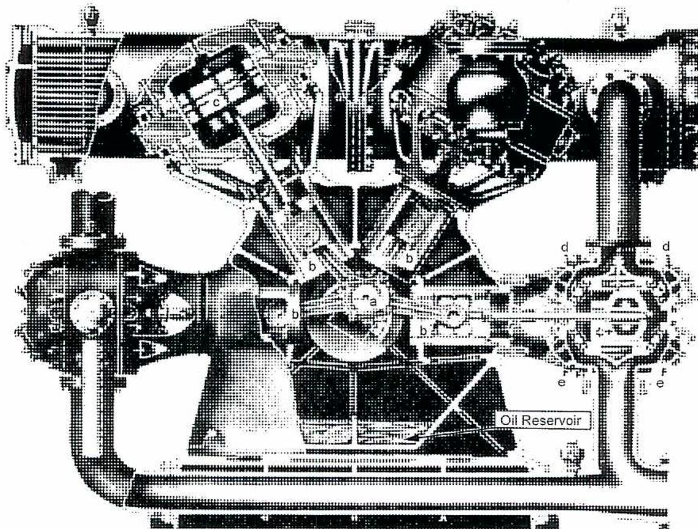
a Crankshaft; b Crossheads; c Pistons and Cylinders; d Suction Valves; e Discharge Valves
Figure 6
Multi-Stage Compressor
Gas Turbines
Fig. 7 shows a typical lube oil system for an aero-derivative gas turbine used for power generation. It lubricates the bearings of both turbine sections – the compressor turbine and the power turbine. A separate system handles the lubrication of the load (driven) equipment. This oil system is divided into two sections: a supply system and a scavenge system. The scavenge system returns the oil from the bearings to the supply and treating equipment. All piping, fittings and reservoir are Type 304 Stainless Steel to prevent corrosion. The system uses synthetic oil suitable for high temperatures.
The oil reservoir contains approximately 500 litres in a 568 litre tank. Protection devices are fitted against low oil level and low oil temperature. A thermostatically controlled heater is included and, to facilitate starting, ensures a minimum temperature is maintained while the unit is not operating.
An auxiliary gearbox on the engine drives a positive displacement pump that provides the required pressure to the bearings. After the pump, a duplex, full flow filter that allows filter changeout while operating filters the oil. High oil temperature, low oil pressure and high filter differential pressure switches protect the oil supply.
The oil flows through the bearings and accumulates in the bearing sumps. The oil temperature is measured at each scavenge line in case of bearing problems.
Chip detectors are often located in the sumps to detect metal particles from the bearings. If a bearing is damaged, metal particles are entrained in the oil. The chip detector is a magnet that attracts these metallic particles and detects when they accumulate on the magnet. Upon alarm, the detector is removed and inspected to diagnose the type and extent of bearing damage.
The auxiliary gearbox of the turbine drives the scavenge pump that provides the pressure for the oil to flow through another set of filters and then through duplex, water-cooled coolers that are thermostatically controlled. The oil then flows back to the reservoir.
The diagram illustrates a typical lube oil system, divided into two main sections: the SUPPLY SYSTEM on the left and the SCAVENGE SYSTEM on the right.
SUPPLY SYSTEM: This section starts with a supply pump located at the bottom left. The oil from this pump passes through a Duplex Supply Filters unit. Above the filters, there are several monitoring points labeled with PT (Pressure Transmitter), PI (Pressure Indicator), and PD (Pressure Differential). The oil then flows into a large central component, likely a turbine or compressor housing, which has multiple TE (Temperature Element) and TI (Temperature Indicator) sensors. An Auxiliary Gearbox Mechanical Drive is shown connected to the supply pump. At the bottom of the supply section, there is a SENSON Transmitter Unit with LI (Level Indicator) and LT (Level Transmitter) sensors.
SCAVENGE SYSTEM: This section begins with five Scavenge Pump Element (5) units located at the base of the central housing. The oil from these elements flows into an Air/Oil Separator . From the separator, the oil passes through a Duplex Scavenge Filters unit, which also has PD (Pressure Differential) monitoring. The oil then flows into two Duplex Shell & Tube Coolers . These coolers have Cooling Water In and Cooling Water Out connections. Monitoring points include TI (Temperature Indicator) and TCV (Temperature Control Valve) on the oil lines, and PD (Pressure Differential) sensors on the cooling water lines. An AIR vent is also shown on the Air/Oil Separator.
Figure 7
Typical Lube Oil System
(General Electric)
Steam Turbines
Fig. 8 is a schematic diagram of a typical lubricating oil system for a turbine generator. The oil tank has a capacity of 4542 to 9084 litres or more depending on the size of the unit. The oil pumps take suction from the oil tank through strainers and discharge the oil at high pressure, 552 to 827 kPa. From here, the oil flows in two different directions:
- • To the power oil and governor relay oil systems
- • To the oil coolers and then to the turbine generator bearings
Using hydraulic pressure, the power oil, acting in servomotors, opens the emergency stop valves and governing valve. Governor relay oil acts as a speed and load sensitive regulating medium. The power oil and the governor relay oil have to be at high pressure.
Oil, used for lubrication, is at a lower pressure, in the 69 kPa to 138 kPa range. Therefore, before the oil passes to the coolers, it flows through a pressure-reducing valve. If the turbine has been operating for a length of time, the oil from the oil tank is quite warm. Therefore, the oil needs cooling, in the oil coolers, before it flows through the bearings. Typical outlet temperatures from the coolers are in the 43° – 49°C range.
Inside the bearings, the oil acts as a lubricant between moving surfaces and also acts as a coolant for the bearings. From the bearings, the oil drains into a return header which leads back into the oil tank. A thermometer is placed in each return line from the bearings to indicate bearing oil temperature.
![Schematic diagram of a Turbine Lubricating Oil System. The diagram shows the flow of oil from the OIL TANK through various components including pumps, coolers, and heaters to the TURBINE, GENERATOR, and EXCITER. The OIL TANK has a LEVEL indicator and a STRAINER. The main oil pump (MAIN OIL PUMP) draws oil from the tank and sends it to the TURBINE. A portion of the oil is diverted to the GOVERNOR, RELAY OIL, and POWER OIL SUPPLY. Another portion goes through OIL COOLERS and a PRESS REDUCING VALVE to the TURBINE. The TURBINE has an OIL DRAIN line. The GENERATOR and EXCITER also have oil lines. A JACKING OIL PUMP is shown. The return oil flows back to the OIL TANK through a return header. The OIL TANK is also connected to an OIL HEATER, OIL PURIFIER, and a MOTOR DRIVEN EMERGENCY STANDBY PUMP. An A.C. MOTOR DRIVEN AUXILIARY OIL PUMP is also shown.](1be8e9cad5f38fa47bdb81e549a3bec9_img.jpg)
The diagram illustrates a complex oil circulation system. At the bottom right, an OIL PURIFIER and OIL HEATER are connected to the OIL TANK. The tank features a LEVEL indicator and a STRAINER. From the tank, oil is drawn by a MOTOR DRIVEN EMERGENCY STANDBY PUMP and an A.C. MOTOR DRIVEN AUXILIARY OIL PUMP. The main flow is driven by the MAIN OIL PUMP, which discharges oil at high pressure. This high-pressure oil is split: one path goes to the GOVERNOR, RELAY OIL, and POWER OIL SUPPLY; another path passes through a series of OIL COOLERS and a PRESS REDUCING VALVE. The oil then enters the TURBINE, where it also receives input from a JACKING OIL PUMP. From the TURBINE, an OIL DRAIN line leads to the return header. The oil also flows to the GENERATOR and EXCITER. All return lines from the bearings and components lead back to the OIL TANK.
Figure 8
Turbine Lubricating Oil System
Fig. 9 shows details of the high and low pressure sides of the oiling system for a steam turbine and generator with hydrogen seals.
![A detailed schematic diagram of a lubrication and seal oil system for a steam turbine and generator. The diagram shows the flow of oil from the Oil Reservoir at the bottom, through the Main Pump Check Suction Valve, to the Main Oil Pump Impeller. The oil then passes through the Brg. Oil Pressure Reg. and the Oil Cooler. It also shows the Hyd. Seal Pump and the Hyd. Seal Press. Reg. Valve. The system includes various valves such as the Steam Inlet, Stop Valve, Exerciser Valve, Trip Test Hold and Reset, Trip Test Valve, Trip Relay Valve, Air Trip Valve for Bleder Check Valves, and the Oil Pump Regulator. Other components shown include the Position Indicating Light, Hand Speed Trip Changer, Solenoid Trip, Reset Test Normal, Overspeed Governor, Relay Power Cylinder, Load Limit, H. P. Pedestal, Power Cylinder, and the Generator and Turbine units at the top. Pressure switches (PS) and temperature sensors (T) are also indicated throughout the system.](1956f44611abd5c3c41049836aa78ad8_img.jpg)
Figure 9
Lubrication and Seal Oil System
Objective 7
Describe the components and operation of a typical lubricating oil purification system.
OIL PURIFICATION EQUIPMENT
The various methods of lubricating oil purification in commercial use are as follows:
- • Settling tanks
- • Centrifuges
- • Strainers
- • Absorbent filters
- • Adsorbent filters
- • Distillation
- • Coagulation
Settling Tanks
Settling is the simplest of all purifying methods but only is used where the oil can be withdrawn from service.
Fig. 10 shows a pair of settling tanks. The warm oil drained from the machine should be run into a clean empty tank having a conical sloping bottom and allowed to stand for a period of about 10 days. Efficient separation of the impurities occurs at an oil temperature of about 50° to 60°C and steam coils or other heating elements are provided to attain this oil temperature.
The heated oil is allowed to stand without agitation to permit water and other impurities to settle out. Some impurities which are soluble at operating temperatures become insoluble at room temperatures, and they are precipitated as the oil cools.
The withdrawal of the clarified oil following the settling is handled with great care to avoid agitation of the impurities which have settled on the sloping sides of the tank. Centrifuging can reclaim the good oil remaining in the sludge after the clarified oil has been drawn off. The tanks, shown in Fig. 10, have a float suction for the clean oil outlet to help avoid forming a vortex which agitates the solid impurities.
Gravity separation is used in systems with large volumes of oil and where water contamination is extensive.
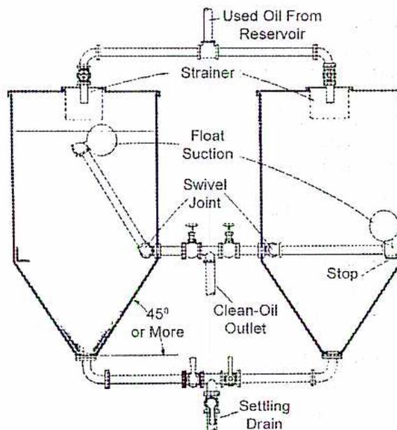
Figure 10
Settling Tanks
CENTRIFUGES
In the centrifuge, the liquid is rotated at high speeds up to 15 000 rev/min. The development of centrifugal force facilitates the separation of the contaminants that are heavier than oil. Sedimentation and separation are continuous and very fast. When liquid and solid particles in a liquid mixture are subjected to the centrifugal force in a separator bowl, it takes only a few seconds to achieve what takes many hours in a tank under the influence of gravity.
The centrifugal bowl (Fig. 11) is equipped with a series of conical discs which divide the feed material into layers less than 1.3 mm in thickness. The oil, water and solids are fed into the top inlet A. The mixed feed material travels down the inlet tube (B) into the centrifuge bowl.
The feed material is forced upward through the holes in the intermediate discs (C) and into the spaces between them. This is where the centrifugal action immediately separates the feed material into the heavy and light phases (oil, water, and solids). The solids are thrown directly to the bowl wall (D). The oil, with its lighter density, is displaced inward and travels upward through the space around the inlet tube to the light phase discharge (E). The incoming feed material displaces the water phase, which centrifugal force has thrown outward, and travels upward along the outer edge of the bowl to the heavy phase discharge (F). Solids may be retained in the bowl or discharged immediately depending on bowl design and operating requirements.
![A cross-sectional diagram of a centrifugal separator. A central vertical tube (B) leads from the top (A) into a stack of conical disks (G) inside a bowl (D). The disks have small holes (C) at their centers. The assembly rotates around the central axis, as indicated by a curved arrow at the bottom. Two discharge streams exit from the top: the light phase (E) from the outer edge and the heavy phase (F) from a central opening. The diagram shows the internal flow and separation of two phases within the disk stack.](967c30813761a8952ecc5e16bf42ea45_img.jpg)
- A. Mixed Feed Inlet
- B. Inlet Tube
- C. Disc Holes
- D. Bowl Wall
- E. Light Phase Discharge
- F. Heavy Phase Discharge
- G. Disks
Figure 11
Centrifugal Separation
Strainers
Strainers may be wire mesh, metal discs, cloth towels, or blotting paper. Strainers do not remove water or other liquid impurities. They remove only the larger solid particles in used oil. Strainers are often used in conjunction with other methods of oil purification. The oil filter, illustrated in Fig. 12, is a combination of settling and straining. The oil first passes through a wire mesh strainer and then to precipitation trays, where water is allowed to settle. After leaving the precipitation compartment the oil passes through cloth bags held on wire frames where solid impurities are strained out.
![A detailed cross-sectional diagram of a combined settling tank and strainer. At the top, an 'Oil-Receiving Tray Strainer' is shown with a 'Steam Coil' passing through it. Below the strainer is a 'Heating Pan'. The main tank body contains 'Baffle and Water Collecting Trays' on the left side. An 'Oil Overflow' pipe is located near the top right. A 'Level Gauge' is mounted on the right side of the tank. 'Cloth Filtering Units' are positioned in the middle of the tank. At the bottom right is a 'Clean Oil Compartment', and at the bottom left is a 'Water Drain'.](d5a837fa4f4675e5ee596003cf55985c_img.jpg)
Figure 12
Combined Settling Tank and Strainer
Absorbent Filters
In-line absorbent filters consist of sponge, wood fiber, cotton waste, or similar materials. When these filters become saturated with impurities, the filter cartridge is cleaned or replaced with a new one. This type of filter should be as large as possible.
Strainers and absorbent filters are always equipped with a relief valve or overflow which permits the oil to be bypassed when the filter becomes clogged.
Adsorbent Filters
Adsorbent filters employ materials which do not absorb impurities as a sponge absorbs water. In this type of purifier, clays, such as fuller's earth and diatomaceous earth, are used as the filtering medium.
Adsorbent filters are highly effective in removing the very finest impurities. A small quantity of fuller's earth presents a vast area of contact surfaces to which impurities can adhere. With this type of filter, the smallest impurities may be removed from used oil.
Clay filtration cannot be employed effectively on oils that contain compounds or additives as the surface of the clay particles will become plugged and inoperative in a comparatively short period of time.
Distillation
Distillation is employed in combination with purifiers to remove the fuel dilution from used crankcase oils. The oil, heated to about 150°C, does not remove all the dilution, particularly the heavy ends of No. 2 fuel oil, but an appreciable percentage is driven off.
Adding a small percentage of new oil that is one grade heavier may overcome some of the effect of the undistilled portion. As a general rule this procedure is necessary only when dilution is excessive.
Coagulation
Coagulation of impurities and acidic compounds using chemicals is an effective method for treating used oils from internal combustion engine crankcases. With the addition of chemicals such as soda ash, trisodium phosphate, or sodium silicate in solution with water, the impurities are coagulated. Settling, filtering, or centrifuging subsequently remove them.
<!-- This page is blank except for three punch holes on the right margin. -->
Objective 8
Describe the various applications of ball-and-roller bearings and their lubrication, including bearing seals.
LUBRICATION PRINCIPLES
Friction between two surfaces is the resistance to motion (or attempted motion). For example, two flat pieces of metal rest upon each other as in Fig. 13. It appears that the smoothly-ground surfaces offer little or no resistance to the movement of one over the other. However, when these surfaces are viewed under a microscope, they are found to have innumerable irregularities similar to the hills and valleys shown in Fig. 14 (a). The interlocking of these irregularities produces a definite resistance to motion.
Figure 13
Smooth Metallic Surfaces
The force necessary to start movement is large compared with that required for continued motion because inertia prevents the moving surface from dropping down again into an interlocking position. Momentum carries the hills of the moving plate over the corresponding hills on the stationary plate. This is the condition that exists in a non-lubricated bearing. The result is the destruction of the rubbing surfaces.
The primary purpose of a lubricant in all types of bearings is to separate the metallic surfaces, Fig. 14 (b), and reduce friction, power losses and wear. The media used to separate bearing surfaces may be liquid, plastic solid or solid, depending upon operating conditions and economic suitability for the purpose. The balls or rollers of ball-and-roller bearings are considered as solid lubricants because they separate moving and stationary surfaces. Pure rolling in this type of bearing is only theoretical because a certain amount of slippage and friction occurs in practice.
Highly-finished ground metallic surfaces appear to be perfectly smooth and incapable of offering resistance to motion if one is pushed over the other.
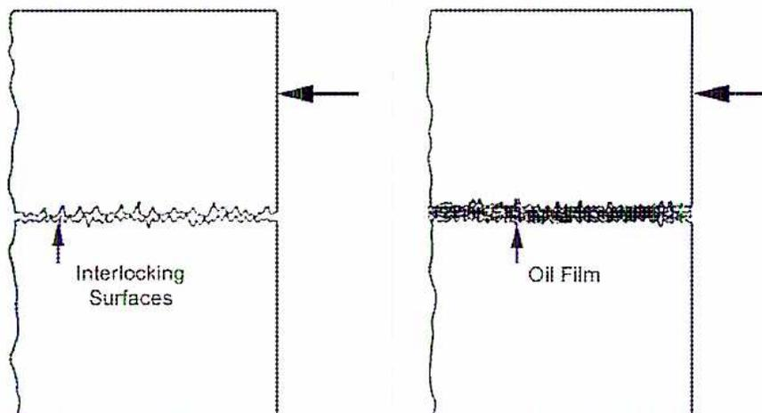
Figure 14
(a) Magnification of Smooth Surfaces
(b) Application of a Suitable Lubricant
FULL FLUID FILM OR FLOOD LUBRICATION
Liquid and plastic solid lubricants are used to separate the moving and stationary parts of bearings with a lubricating film that prevents metallic contact. When this film is thick enough to completely separate the moving surfaces, the condition is called full fluid film or flood lubrication . Complete separation of the surfaces in a bearing with lubricating oil film implies a film of lubricant so thick that the high spots on these surfaces do not touch. This condition only occurs when the clearance space is flooded with oil and there is motion.
Without motion, the oil film breaks down and is squeezed out of the bearing-pressure area leaving the surfaces only oil wet. This does occur as a bearing comes to rest. When operating from rest, the oil wet surfaces facilitate the initial movement, and the moving part carries with it sufficient oil from the adjacent supply to rebuild the film on which it may ride.
BALL AND ROLLER BEARINGS
The word bearing is used to describe any form of supporting or constraining apparatus defining relative motion between the supporting or constraining agent and the supported or constrained member. Bearings are subdivided into three groups:
- • Radial Bearings
- • Guide Bearings
- • Thrust Bearings
Radial Bearings
Radial bearing is the term given to all applications where a circular member is constrained so that it can only rotate about its own axis. The formation of a full fluid film in a radial bearing is shown diagrammatically in Figs. 15 to 19.
In Fig. 15, clearance between a shaft and its bearing is depicted in exaggerated form. The shaft is shown at rest and a small quantity of oil remains in the pressure area from previous operation. Downward force of the idle shaft has squeezed the fluid film out of the pressure area leaving the surfaces in an oil wet condition. This is the condition before the shaft revolves.
The idle shaft is resting upon the microscopic high spots in the bearing. In other words the load on the bearing is not uniformly distributed over the entire projected pressure area but is concentrated on both the shaft and the bearing. The effect is to intensify the loading on the reduced area carrying the shaft.
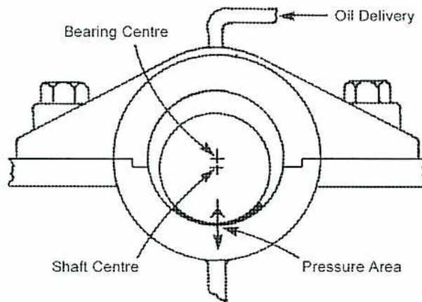
A cross-sectional diagram of a shaft within a bearing housing. The shaft is shown as a circle with a center point labeled 'Shaft Centre'. The bearing housing is the surrounding structure, with its center labeled 'Bearing Centre'. The shaft is positioned such that there is a larger gap at the top and a smaller gap at the bottom. The bottom gap is labeled 'Pressure Area' with a double-headed arrow indicating the narrow clearance. An arrow labeled 'Oil Delivery' points to a small inlet at the top of the bearing housing. The bearing housing is shown with two bolts on each side, securing it to a base.
Figure 15
Shaft at Rest
In Fig. 16, the shaft has started to rotate and oil is being fed into the bearing at the top where the clearance between the shaft and the bearing is greatest. If the oil supply is adequate and the oil itself sufficiently fluid, this clearance space is immediately filled. Leakage of oil from the ends of the bearing depends upon the pressure exerted on the oil in the clearance space, the length of the bearing and the resistance which the oil itself offers to easy flow.
Due to the interlocking of the surface irregularities, the frictional resistance upon starting is very high and the shaft momentarily climbs up the side of the bearing. During this climb, the mass of the shaft is transferred from the lowest point in the bearing to a new area wet with oil. The area of the shaft now resting on the bearing is also thoroughly oil wetted.
Continued rotation of the shaft produces a condition where the shaft no longer sufficiently grips the bearing. Instantly, the shaft ceases to climb and begins to slide over the bearing surface with reduced friction and torque. As the speed increases, the oil adhering to the shaft surface is continually drawn into the clearance space and develops a hydraulic pressure in the wedge of oil.
The intensity of this pressure depends upon the speed of the shaft, the adhesiveness of the oil, and the surface finish of the shaft. The finish of the shaft is important because the pumping action which gives rise to the hydraulic pressure is dependent upon the adhesion of the oil in the microscopic irregularities in the shaft surface. The point of greatest pressure is at the tip or thinnest portion of the wedge.
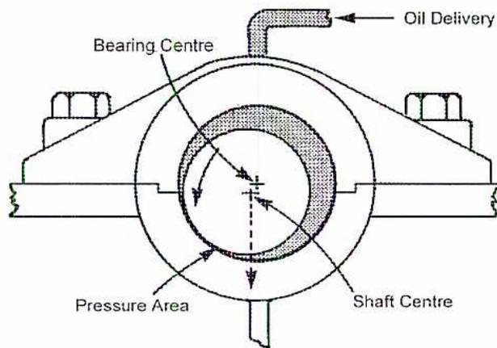
A cross-sectional diagram of a shaft within a bearing housing. The shaft is shown as a circle with a center point labeled 'Shaft Centre'. The bearing housing is the outer ring, with its center labeled 'Bearing Centre'. The shaft is slightly offset from the bearing center, creating a wedge-shaped gap. An arrow labeled 'Oil Delivery' points into this gap from the top. A shaded region on the left side of the gap is labeled 'Pressure Area', with arrows indicating the flow of oil within the wedge.
Figure 16
Shaft Beginning to Rotate
As the pressure in the wedge increases, the oil seeks every possible avenue of escape. The ends of the bearing afford an opportunity for leakage. However, if the oil used has adequate resistance to flow, end leakage is minimized and the hydraulic pressure in the wedge increases. Eventually the shaft is lifted from the bearing and provides a ready escape route for the oil under the revolving shaft. Under these conditions the shaft slips back to its original central position, Fig. 17, and rides upon an oil film of measurable thickness. The interlocking microscopic hills and valleys of the contacting surfaces restrict its movement and the torque required to turn the shaft is substantially reduced.
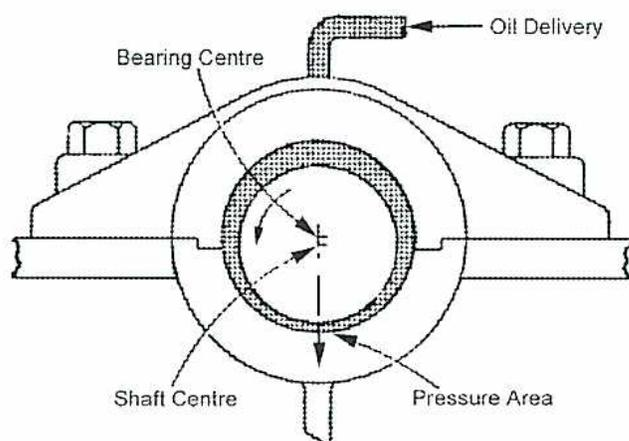
Figure 17
Shaft Increasing Speed
At full speed, the hydraulic pressure in the oil wedge is sufficient to move the shaft over to the other side of bearing as shown in Fig. 18.
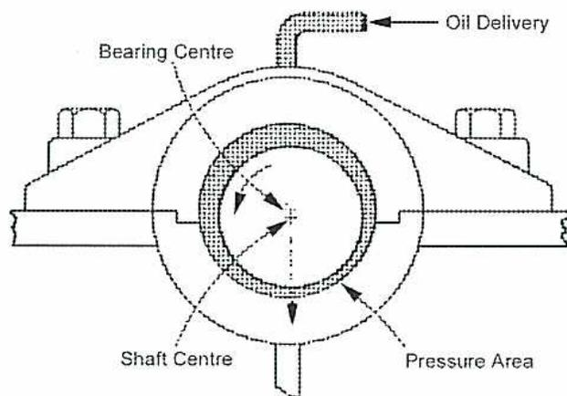
Figure 18
Shaft at Full Speed
During operation, the film of oil continues to separate the metallic surfaces and floats the rapidly revolving shaft. The only friction encountered is the fluid friction the rapid shear of the many thin layers of oil cause as they slide over one another. The outer layers adhere to the microscopic projections on the bearing and the inner layers adhere to the microscopic projections on the shaft.
As the shaft rotates and these hypothetical layers of oil move over one another, the intensity of shear is greatest in the middle layers. Therefore, the heat the shearing generates is also greatest in the middle layers. The oil layers immediately adjacent to the metal parts, being cooler than the internal layers, are more viscous and therefore cling to the metal parts forming a protective coating.
Fig. 19 shows the pressure distribution in an oil film in a radial bearing. The length of each line (measured radially) is proportional to the pressure at that point. Maximum pressure is reached at a point after bottom dead centre and as soon as the maximum oil pressure area is passed, there is a sharp decrease in pressure. At point A, there is actually a suction effect instead of a pressure.
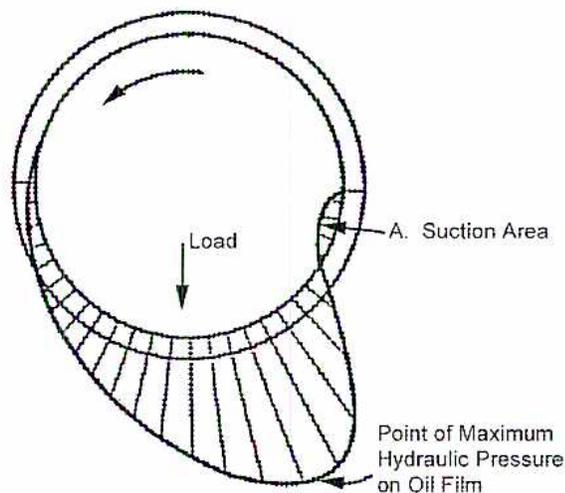
Figure 19
Oil Pressure Distribution in a Radial Bearing
These hydraulic pressures are taken into account when constructing bearings, and particularly when positioning oil feeds, and cutting oil grooves in a radial bearing.
To achieve full fluid-film lubrication the following conditions are fulfilled:
- • The lubricant is capable of “wetting” the journal and bearing so that the oil adheres to the revolving journal and be drawn into the pressure area.
- • The bearing and journal are free to assume a slight angle to permit the formation of a converging oil film. It is not possible to obtain fluid-film lubrication between two parallel flat surfaces because an oil wedge cannot be built up.
- • The clearance space between the bearing and the journal is kept full of oil.
- • The lubricant is applied in the low-pressure area of the bearing.
- • The viscosity of the oil is sufficiently high to permit the formation of a load-supporting oil film under the prevailing conditions of load and speed.
- • There is a minimum rubbing speed (Any other word we can use?) below which a full fluid oil film cannot be provided. This condition accounts for most of the wear in the bearings that stop and start frequently.
Guide Bearings
Guide bearings guide moving members along a predetermined path. A cylinder is a guide bearing for the piston reciprocating within it.
Thrust Bearings
A thrust bearing prevents unwanted axial movement and keeps the shaft in its correct location. The load which a thrust bearing carries to achieve this varies from a few kilograms in the case of a small electric motor to several tonnes for a reaction turbine rotor.
Various types of thrust bearings are used:
- • Ball
- • Collar
- • Tilting Pad
Ball Thrust Bearing
Fig. 20 shows a typical ball thrust bearing. The ball raceways are ground into the face of the rings and the bearing is intended for thrust loads only. A separate radial bearing absorbs any radial load.
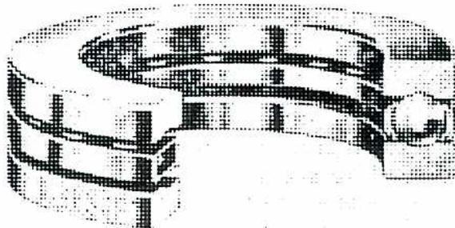
Figure 20
Ball Thrust Bearing
Collar Thrust Bearing
Fig. 21 shows a simple collar thrust bearing. The shaft has three collars and each of these bears against the surface of a bearing block. Boundary lubrication is also present in simple collar type thrust bearings. The oil is introduced, as shown in Fig. 21(a), between the collars so that centrifugal force throws it outward across the thrust surfaces.
Fig. 21(b) shows an incorrect method of introducing lubrication to the collar thrust. The lubricant is not introduced at the circumference of the rotating collars. Centrifugal force prevents the oil from reaching those areas which take the thrust.
The faces of the collars and their bearings are flat and parallel. Therefore, this type of thrust bearing is limited in the load it can carry because there is no oil wedge action produced.
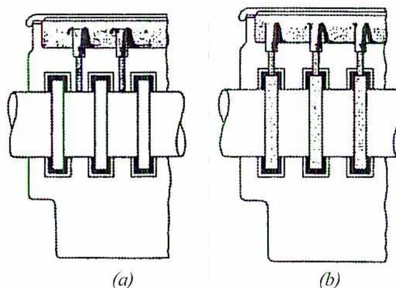
Figure 21
Simple Collar Thrust Bearing
Tilting Pad
A more suitable design of thrust bearing has the bearing surfaces in the form of pads. These pads are free to tilt and allow the formation of an oil wedge to separate the bearing pad from the shaft collar.
The Michell thrust bearing, Fig. 22(a), and the similar Kingsbury thrust Fig. 22(b), are single collar bearings that have specially designed thrust pads that are pivoted to allow the formation of an oil wedge between the faces of thrust pad and shaft collar.
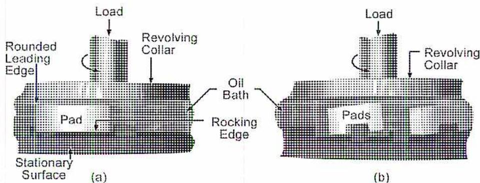
Figure 22
Tilting Pad Thrust Bearings
Bearing Seals
Bearing seals are installed on the shaft where it enters the bearing housing. This is to:
- • Prevent foreign matter, such as dust, grit and water, from entering the bearing housing and contaminating the lubricant
- • Prevent the lubricant from leaving the housing
These seals (Fig. 23) are felt, synthetic rubber, or leather rings, enclosed in their own steel casing. They are sometimes fitted with a light spring to force the seal against the shaft.
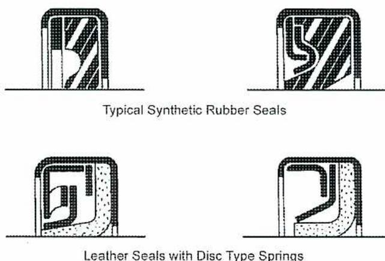
Figure 23
Shaft Seals
Fig. 24 shows a seal mounted in the housing of a ball bearing, which can be either oil or grease lubricated.
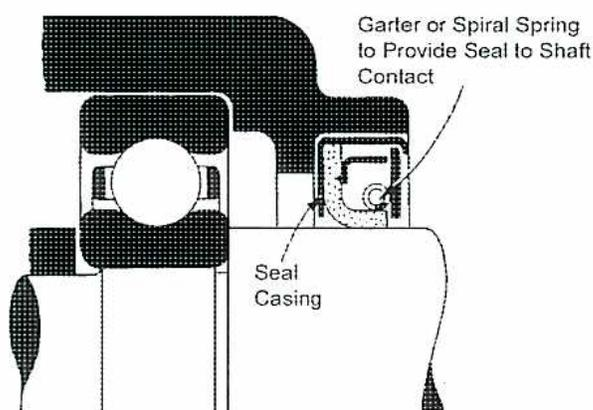
Figure 24
Ball Bearing with Seal
Hydrodynamic Theory
The previous description and diagrams follow the hydrodynamic theory of lubrication involving a fluid film completely separating the opposing surface. The following diagrams give a graphic analysis of this action.
Fig. 25(a) and (b) show a surface X moving at constant velocity across a stationary surface Y with an oil film between the two. In Fig. 25 (a), the X and Y surfaces are parallel, in Fig. 25(b) the X surface is at a slight angle. In each case, the triangle abc
represents the quantity of oil entering between the surfaces and the triangle \( a'b'c' \) the quantity of oil leaving.
In Fig. 25 (a) \( bc = b'c' \) , the triangles are equal, and the quantity of oil entering the bearing equals the quantity leaving. There is no upward force acting to separate the surfaces X and Y. In Fig. 25 (b), \( bc \) is greater than \( b'c' \) and \( ac \) is greater than \( a'c' \) . Therefore triangle \( abc \) is greater than \( a'b'c' \) . More oil can enter than is able to leave and a vertical force results which tends to separate X from Y.
In both Fig. 25 (a) and 25 (b), there is a horizontal force shearing the oil but only in (b) is there a resultant vertical force. This principle explains why moving surfaces are designed to provide a wedge if full fluid-film lubrication is to be achieved and machinery is to carry high loads without wear.
![Figure 25: Hydrodynamic Theory. Two diagrams, (a) and (b), showing a hatched block X moving horizontally to the right over a fixed horizontal surface Y. In (a), the bottom surface of X is parallel to Y. Velocity profiles are shown as triangles: triangle abc at the inlet and triangle a'b'c' at the outlet. In (a), these triangles are identical. In (b), the bottom surface of X is inclined, creating a wedge that narrows toward the right. The inlet velocity profile (triangle abc) is larger than the outlet profile (triangle a'b'c'), and a vertical arrow indicates an upward force on block X.](c613ca237231251d524291a877d91f7a_img.jpg)
Figure 25
Hydrodynamic Theory
BOUNDARY LUBRICATION
Under some conditions, it is impossible to maintain a complete fluid film over the rubbing surfaces and a film of only microscopic thickness is present. The surfaces are only wetted, and consequently the hills of each surface may make contact and set up friction and wear. When conditions of bearing design, speed, load, and method of application of the lubricant are not favourable to the formation of an oil film, the state of lubrication is called the boundary lubrication . In this case, there may be intermittent contact between the bearing and journal, and the laws of fluid-film lubrication are not applicable. The lubricant merely serves to make the opposing surfaces more slippery and to fill in surface imperfections.
For slow speeds and heavy loads, “oiliness” or film strength of the lubricant, is an important factor. These conditions of operation indicate that a grease or a solid lubricant should be used. Because the greases are polar compounds, they provide greater wetting ability than conventional oils. Solid lubricants are used only under special conditions.
Oil Grooves in Bearings
Grooves are frequently used in the top half of the bearing or non-pressure area for distributing the lubricant evenly ahead of the pressure area. Grooves in the actual pressure area are considered harmful because they tend to disrupt the oil film and reduce the size of this area.
The ability of an oil film to lift and support a heavy load is dependent upon hydraulic pressure. The pumping action of the rotating journal brings this pressure about, and any grooves in the pressure area that permit oil to escape tend to encourage metallic contact. When bearings are composed of two or more parts fitted together, any sharp corners at the joints tend to scrape the oil from the journal. Consequently, all corners and edges are chamfered or rounded to prevent this scraping action.
Figs. 26 and 27 show the type of groove necessary for a typical bearing. A single groove in the upper part of a one-piece bearing (Fig. 26) is normally sufficient to secure adequate oil distribution over the entire bearing area.
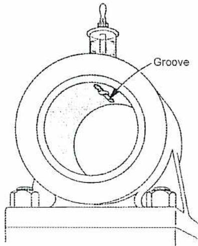
Figure 26
Groove in One-piece Bearing
Simple chamfers in a two piece bearing (Fig. 27) serve a two fold purpose. They prevent the sharp edges of the bearing base and cap scraping lubricant from the shaft. Chamfers also act as reservoirs which afford distribution along the bearing length. When chamfering a bearing, it is important to cut away any shims which might be present to prevent them from scraping the shaft.
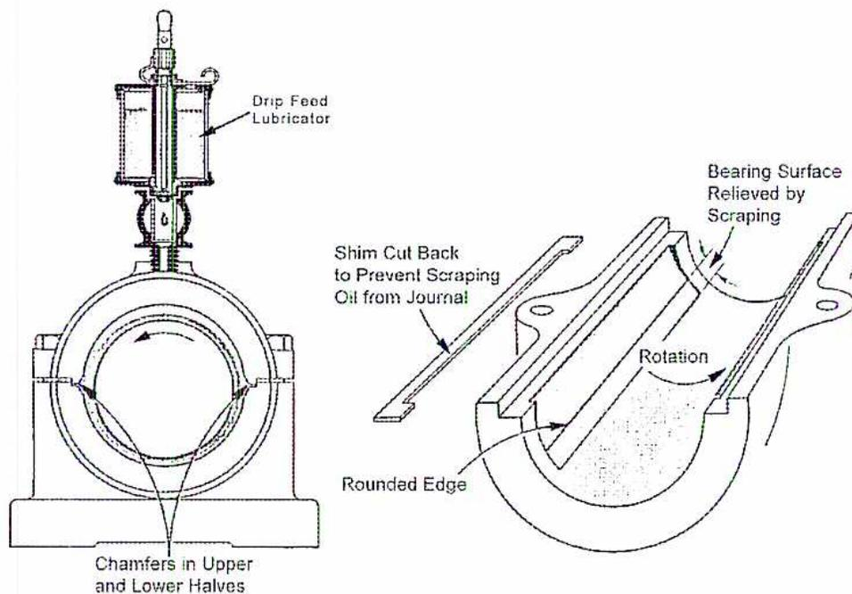
Figure 27
Oil Distribution in a Two Piece Bearing
In heavy-duty slow-speed bearings it may be desirable to cut an auxiliary oil groove (Fig. 28) in the lower half of the bearing. This is just ahead of the maximum pressure area to ensure an adequate supply of oil along the entire bearing length in that area.
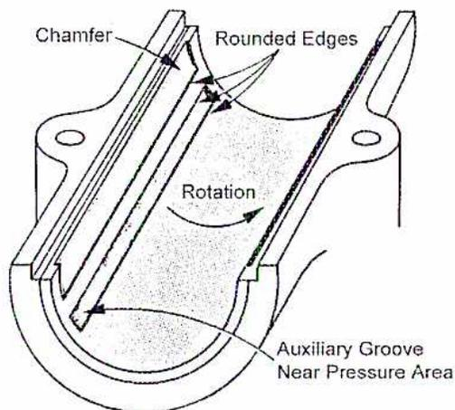
Figure 28
Auxiliary Oil Groove
Fig. 29 illustrates the type of grooving that is detrimental in the pressure area of a bearing. This type of grooving serves to cut down the actual bearing area and allows the oil under pressure to escape.
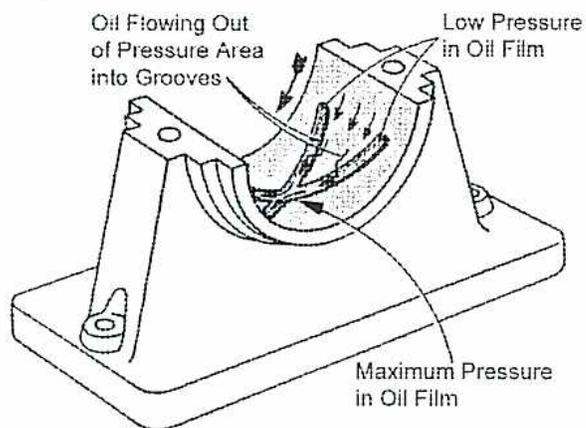
Figure 29
Example of Incorrect Grooving
Another detrimental effect of grooves in the pressure area is that, as the bearing wears, the chamfer is reduced to a sharp edge, which acts as a scraper and increases the rate of wear. Fig. 30 shows the effect of such grooves on the distribution of oil pressure.
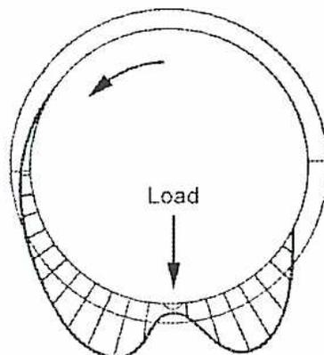
Figure 30
Effect of Incorrect Grooving
Chapter Questions
B1.9
- 1. With the aid of a simple sketch, describe how the various cuts of oils are separated in a fractionating tower.
-
2. Briefly describe the following:
- a) Viscosity
- b) Pour point
- c) Cloud point
- d) Flash point
-
3. a) Explain what occurs when lubricating oils react with oxygen.
b) Briefly describe various causes for this reaction to be accelerated. -
4. Give a brief explanation of the following lubrication additives.
- a) Detergent-dispersent
- b) Anti-wear agents
- c) Foam inhibitors
- d) Rust prevention
- 5. What are the advantages to planning the entire plant lubrication program as one combined operation?
- 6. With the aid of a simple sketch, explain the operation of a lube oil centrifuge.
- 7. With the aid of a sketch, explain the hydrodynamic theory of lubrication.